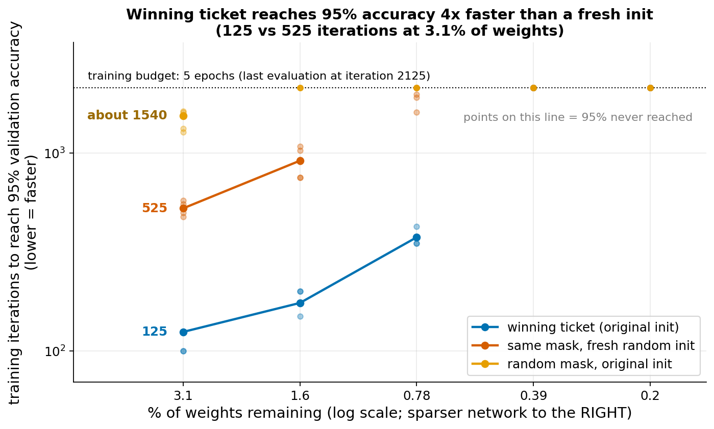
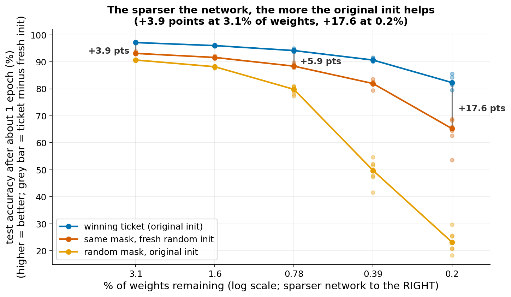
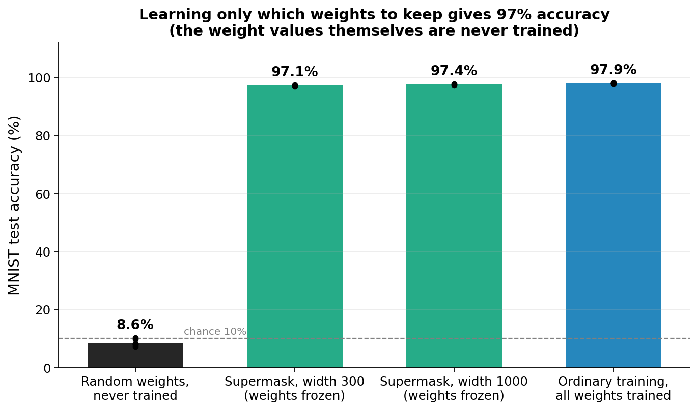

Lottery ticket
Extends the generalization themes (Lab 2), next to regularization.
The idea
Iterative magnitude pruning. Train a network. Remove the weights with the smallest absolute value (here: the smallest 50% over the whole network). The removed weights are set to zero and stay zero. The result is a binary mask: 1 for kept weights, 0 for removed ones. Repeat on the surviving weights. After 5 rounds 3.1% of the weights remain, after 9 rounds 0.2%.
Rewinding. After each pruning round, the surviving weights are reset to the values they had at the very start of training (the original random initialization). Then the network is trained again with the mask applied.
Winning ticket, literally. The pair (mask, original initial values) is called a winning ticket if, trained alone, it learns about as fast and as well as the full network. The name is a metaphor from the literature; the content is only this. Two controls show what matters: (1) the same mask with new random weights, and (2) a random mask with the same number of weights and the original values. If the ticket beats both, the benefit comes from the specific combination of mask and initial values.
Supermask. Zhou et al. (2019) showed that a mask applied to random, untrained weights can already give accuracy far above chance. Ramanujan et al. (2020) made this work well with edge-popup: keep the weights frozen at their random values, give every weight a learned score, and in each layer keep the top-scoring 50% of the weights. Only the scores are trained. In our run this gave about 97% on MNIST.
Why it matters. It shows that a network contains many sub-networks and that the starting point of training strongly affects what training can do. This is the main link to the course: Goodfellow chapter 8 (initialization: the starting weights change how fast and how well optimization goes) and chapter 7 (regularization: pruning is a way to reduce the number of effective parameters, and sparsity acts as a constraint).
Established vs debated. Established on small networks and MNIST: tickets exist and train faster. For larger networks (deeper CNNs, ImageNet), rewinding to the exact initialization often fails; Frankle et al. (2019, 2020) found that rewinding to a point early in training (a small fraction of the run, not iteration 0) works instead. We saw no effect of rewinding to iteration 200 or 1000 on our small network, but we ran only 4 seeds. Whether tickets explain why large networks generalize is still debated.
- Frankle and Carbin, "The Lottery Ticket Hypothesis" (2019): arXiv 1803.03635
- Zhou et al., "Deconstructing Lottery Tickets: Zeros, Signs, and the Supermask" (2019): arXiv 1905.01067
- Ramanujan et al., "What's Hidden in a Randomly Weighted Neural Network?" (2020): arXiv 1911.13299
- Frankle, Dziugaite, Roy, Carbin, "Stabilizing the Lottery Ticket Hypothesis" (2019): arXiv 1903.01611
What students would do
- Setup (guided). Load MNIST, split off a validation set, build a LeNet-300-100 (fully connected, 300 and 100 hidden units). Train the dense network for 5 epochs and record validation accuracy every 25 iterations. One epoch is about 430 iterations.
- Prune (guided). Write the magnitude-pruning step: find the global threshold, build the mask, apply it. Rewind to the saved initial weights.
- Three conditions at the same sparsity (guided). Train (a) the winning ticket (mask plus original init), (b) the same mask with a fresh random init, (c) a random mask with the original init. Compare the three accuracy curves.
- Class experiment. Each student takes one sparsity level from a grid of three (3.1%, 0.78%, 0.2% of weights remaining) with a different seed, runs all three conditions and reports the three curves.
- Optional extension. Run edge-popup on a width-300 network and compare it to the trained dense baseline.
Class plot. Validation accuracy against iteration, one panel per sparsity level, three colored curves (ticket, fresh init, random mask), median over students with min-max band. Students see the ticket curve rise first, and the gap grow as the level gets sparser.
Discussion questions.
- Same mask, different starting weights: why does the starting point matter so much?
- Why does the random mask fall behind the fresh-init mask at the highest sparsity? What does the pruning find that a random mask does not?
- If a mask on random weights reaches 97%, where is the information stored: in the weights or in the mask?
- Connection to chapter 8: what does a good initialization do for optimization?
What our prototype found
Setup: LeNet-300-100, MNIST, 50% global magnitude pruning per round, rewind to the original init, Adam learning rate 1.2e-3, 5 epochs per run (55,000 training images, batch 128: about 429 iterations per epoch; the last evaluation is at iteration 2125), 6 seeds. Dots in the plots are single seeds; lines are medians. Test accuracy is used only for reporting; the 95% threshold is measured on the validation set.



| % weights remaining | Ticket: iterations to 95% val. | Fresh init: iterations to 95% val. | Random mask: iterations to 95% val. | Ticket minus fresh, test acc. after about 1 epoch (points) |
|---|---|---|---|---|
| 3.1 | 125 | 525 | about 1540 | +3.9 |
| 1.6 | 175 | about 910 | not reached | +4.4 |
| 0.78 | 375 | reached by 3 of 6 seeds | not reached | +5.9 |
| 0.39 | not reached | not reached | not reached | +8.8 |
| 0.2 | not reached | not reached | not reached | +17.6 |
Other numbers: dense network 97.8% test accuracy at the end of training. Ticket accuracy at convergence (early stopping on validation loss, Adam): 97.9% at 3.1%, 95.8% at 0.78%, 87.4% at 0.2%. With plain SGD (learning rate 0.1, 7 seeds) the gaps after one epoch are larger (+9.0, +28, +58 points at 3.1, 0.78, 0.2%), but fresh-init networks also train slowly under SGD, so part of that gap reflects a slow learner and not the init alone. With SGD with momentum and with Adam at 3e-4 or 4e-3 (4 seeds), the gap has the same sign; a high Adam learning rate shrinks it.
Why we measure speed instead of final accuracy
A first attempt trained every network for 8 epochs and compared the final test accuracy. By then all three conditions have almost caught up. At 3.1% remaining, the ticket scored 98.0% against 97.1% for fresh init (a gap of 0.9 points), and at 0.78% it was 95.9% against 94.1%. A one-point difference is hard to see on a class plot, especially with a few seeds per level.
The difference is large early in training. We therefore measure the speed at which a run gets there: iterations to reach 95% validation accuracy, and accuracy after one epoch. Both show gaps of several points to several hundred iterations, and they grow with sparsity. We also go to sparser levels (down to 0.2%), where even the final accuracy gap reaches 10 points. Iteration of best validation loss was tried as a measure and dropped: validation loss was still falling at the end of the 5-epoch budget, so it is not readable.